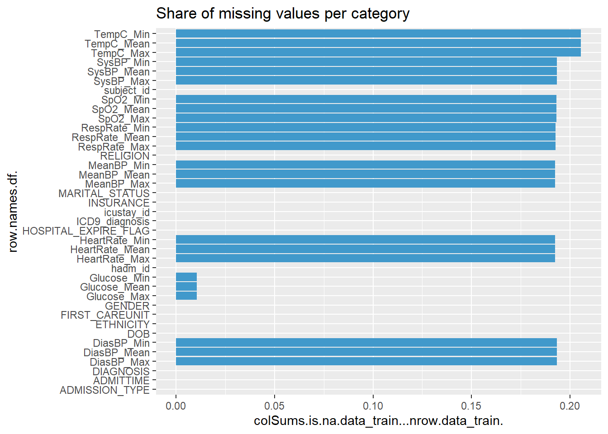
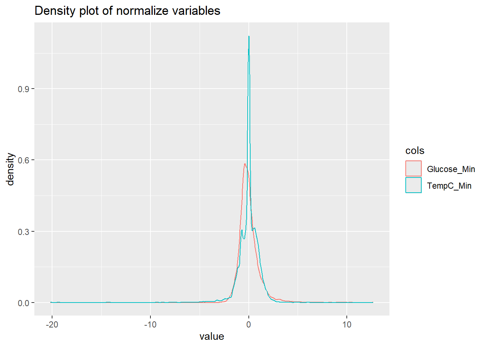
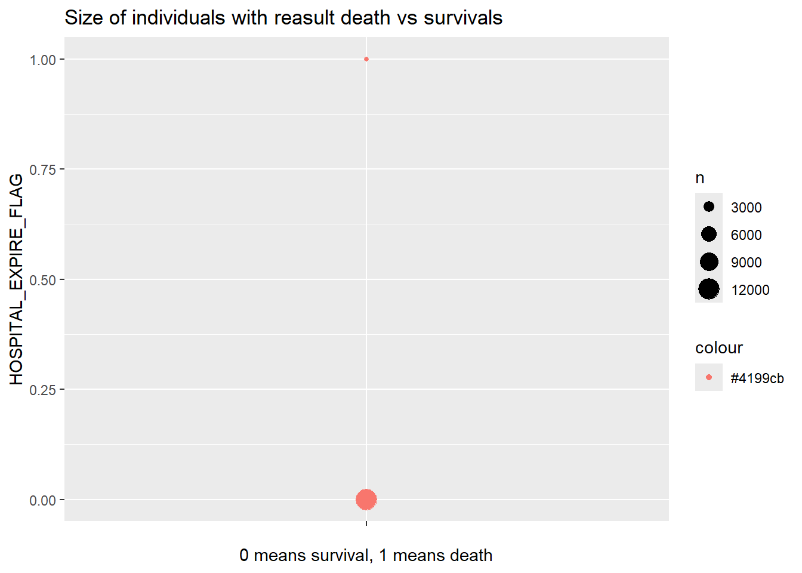
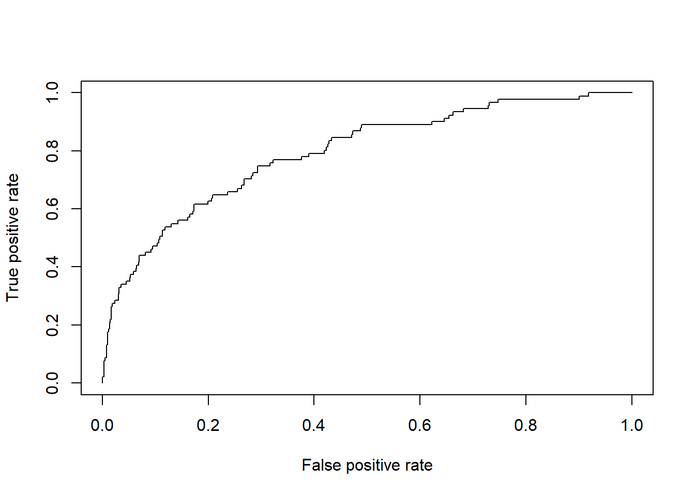

Predicting ICU Mortality: A Classification Workflow in R
classification
machine learning
statistical learning
logistic regression
ridge
lasso
MICE
R
An end-to-end classification project in R predicting in-hospital mortality from vital signs recorded in the first hours of an ICU stay. Covers missing-value imputation with MICE, encoding of categorical variables, feature scaling, class weighting for imbalanced outcomes, and penalised logistic regression with ridge and lasso, evaluated by AUC.
Author
Andres Martinez Gonzalez
Published
January 16, 2021
1 The problem
A patient arrives at an Intensive Care Unit. Within the first hours, monitors record a handful of vital signs: heart rate, blood pressure, respiratory rate, temperature, oxygen saturation, blood glucose. Each is summarised as a minimum, a maximum and a mean over that window.
The question is whether those early measurements carry enough signal to predict whether the patient will survive the hospital stay.
This is a binary classification problem, and a useful one to work through end to end, because the raw data has almost every complication a real dataset throws at you: missing values scattered across the clinical variables, categorical fields that need encoding, numerical features measured on wildly different scales, and — most importantly — a heavily imbalanced outcome, since most patients survive.
The plan is straightforward. Clean the data, engineer the features, split into training and validation sets, fit two penalised logistic regressions, and compare them on AUC. What follows is that sequence, with the reasoning for each decision spelled out.
2 Setting up
Three things happen here. First, packages are loaded through a small routine that installs anything missing, so the document runs on any machine without manual setup. Second, the data is read straight from a public GitHub repository rather than a local path — the same reason: reproducibility. Third, two helper functions are defined up front.
The training and test sets are read directly by URL.
####Load the datasets #### data_train<-read.csv('https://github.com/AndresMtnezGlez/heptaomicron/raw/main/train_prob_death.csv') # this is a relative path from current folder to the folder where you have the datasetdata_test<-read.csv('https://github.com/AndresMtnezGlez/heptaomicron/raw/main/test_prob_death.csv')#head(data_train) #Peak the dataset first rows #head(data_test) #Peak the dataset first rows #str(data_train) #Check the structure of the variables
Two small helpers are worth defining once rather than repeating. getmode() returns the most frequent value of a vector, which is what we want when filling gaps in a categorical field — the mean is meaningless for a category, but the mode is a sensible default. plot_miss() draws the share of missing values in every column, which turns out to be the fastest way to see whether an imputation step actually worked.
Setting a seed makes everything below reproducible: the random split, the imputation draws, the sampling.
Before anything else, the two date fields are stored as character strings and need converting, otherwise any arithmetic on them silently fails.
data_train$DOB <-as.Date(data_train$DOB)data_train$ADMITTIME <-as.Date(data_train$ADMITTIME) str(data_train) #To check that it has worked
'data.frame': 13840 obs. of 39 variables:
$ HOSPITAL_EXPIRE_FLAG: int 0 0 0 0 0 0 1 0 0 0 ...
$ subject_id : int 55440 28424 86233 53787 99384 70776 68623 94431 76652 53782 ...
$ hadm_id : int 195768 127337 184606 174772 168087 183743 179098 156573 103471 190648 ...
$ icustay_id : int 228357 225281 237514 244413 298919 278855 207692 277837 231233 246339 ...
$ HeartRate_Min : num 89 NA 62 84 74 94 56 52 59 72 ...
$ HeartRate_Max : num 145 NA 100 109 98 109 77 127 91 100 ...
$ HeartRate_Mean : num 121 NA 82.9 94.7 81.1 ...
$ SysBP_Min : num 74 NA 62 81 84 128 83 92 105 81 ...
$ SysBP_Max : num 127 NA 154 163 140 151 148 144 149 150 ...
$ SysBP_Mean : num 107 NA 115 122 114 ...
$ DiasBP_Min : num 42 NA 34 29 35 60 46 41 46 47 ...
$ DiasBP_Max : num 90 NA 113 77 72 82 91 67 117 69 ...
$ DiasBP_Mean : num 61.2 NA 57 47.9 54.3 ...
$ MeanBP_Min : num 59 NA 48 49 31 78 59 59 60 52 ...
$ MeanBP_Max : num 94 NA 122 87 81 109 98 97 124 93 ...
$ MeanBP_Mean : num 74.5 NA 72.8 65.7 66.8 ...
$ RespRate_Min : num 15 NA 11 15 17 11 16 9 9 10 ...
$ RespRate_Max : num 30 NA 26 25 28 27 28 31 21 36 ...
$ RespRate_Mean : num 22.3 NA 18.9 19.9 23.3 ...
$ TempC_Min : num 35.1 NA 36.1 35.6 35.9 ...
$ TempC_Max : num 36.9 NA 37.7 36.9 37.1 ...
$ TempC_Mean : num 36.1 NA 36.9 36.2 36.7 ...
$ SpO2_Min : num 90 NA 87 89 88 92 94 95 97 94 ...
$ SpO2_Max : num 99 NA 100 100 99 97 100 100 100 100 ...
$ SpO2_Mean : num 95.7 NA 96.9 92.9 94.6 ...
$ Glucose_Min : num 111 97 116 233 85 142 137 78 97 62 ...
$ Glucose_Max : num 230 137 183 484 161 173 164 185 125 164 ...
$ Glucose_Mean : num 161 113 142 361 112 ...
$ GENDER : chr "F" "F" "F" "F" ...
$ DOB : Date, format: "1938-11-23" "1929-04-30" ...
$ ADMITTIME : Date, format: "2008-06-15" "2008-09-12" ...
$ ADMISSION_TYPE : chr "EMERGENCY" "EMERGENCY" "ELECTIVE" "EMERGENCY" ...
$ INSURANCE : chr "Medicare" "Medicare" "Medicare" "Medicare" ...
$ RELIGION : chr "PROTESTANT QUAKER" "JEWISH" "PROTESTANT QUAKER" "CATHOLIC" ...
$ MARITAL_STATUS : chr "SINGLE" "WIDOWED" "MARRIED" "DIVORCED" ...
$ ETHNICITY : chr "WHITE" "WHITE" "WHITE" "WHITE" ...
$ DIAGNOSIS : chr "GASTROINTESTINAL BLEED" "ABDOMINAL PAIN" "LEFT LUNG CANCER/SDA" "ASTHMA;COPD EXACERBATION" ...
$ ICD9_diagnosis : chr "5789" "56211" "1625" "49322" ...
$ FIRST_CAREUNIT : chr "MICU" "TSICU" "SICU" "MICU" ...
Now to the missing values. The first move is always to look at the extent of the problem rather than guess at it.
####Missing values#### plot_miss(data_train)

The plot shows the gaps are concentrated in the clinical measurements — heart rate, blood pressure, glucose and so on — which makes sense: not every patient gets every measurement taken in their first hours.
The question is what to do about them. Dropping the affected rows would throw away a large share of the data. Filling each gap with the column mean is better, but it distorts the distribution: every imputed value sits exactly at the centre, which artificially shrinks the variance and weakens any correlation the variable has with the outcome.
The approach used here is multiple imputation by chained equations (MICE). Instead of filling a gap with a single summary statistic, MICE models each incomplete variable as a function of the others and draws a plausible value from that model. It does this iteratively — imputing one variable, then using the filled-in version to help impute the next, cycling until the values stabilise. The result preserves the relationships between variables, which is exactly what a downstream model needs.
The procedure starts from unconditional means (meth="mean", maxit=0) and then runs five iterations, generating three complete datasets.
#Replace missing in categorical by most frecuent value l_num_features <-c('HeartRate_Min','HeartRate_Max','HeartRate_Mean','SysBP_Min','SysBP_Max','SysBP_Mean','DiasBP_Min','DiasBP_Max','DiasBP_Mean','MeanBP_Min','MeanBP_Max','MeanBP_Mean','RespRate_Min','RespRate_Max','RespRate_Mean','TempC_Min','TempC_Max','TempC_Mean','SpO2_Min','SpO2_Max','SpO2_Mean','Glucose_Min','Glucose_Max','Glucose_Mean')df_num_feautes <- data_train[,l_num_features]init <-mice(df_num_feautes, meth="mean", maxit=0)imputation <-mice(df_num_feautes, method=init$method, maxit=5, m =3)
One of those three imputed datasets is selected to complete the dataframe, and the missingness plot is redrawn to confirm the gaps are gone.
The dataset gives a date of birth and an admission time, which is more useful as a single derived variable. Age at admission is a well-established predictor of ICU outcomes, so it is worth constructing explicitly rather than leaving the model to infer it from two dates.
#Getting only the "year" from the dates and calculating the age data_train$DOB <-format(as.Date(data_train$DOB, format="%Y/%m/%d"),"%Y")data_train$ADMITTIME <-format(as.Date(data_train$ADMITTIME, format="%Y/%m/%d"),"%Y")data_train$DOB<-as.numeric(as.character(data_train$DOB))data_train$ADMITTIME<-as.numeric(as.character(data_train$ADMITTIME))data_train %<>%mutate(AGE = DOB - ADMITTIME)data_train %<>%select(-DOB, -ADMITTIME)
4 Categorical variables
Categorical fields cannot be fed to a regression as they stand. The obvious fix — assigning 1, 2, 3 to the categories — is wrong, because it imposes an ordering and a spacing that the data does not have: it tells the model that category 3 is somehow three times category 1, and that the step from 1 to 2 is the same size as the step from 2 to 3.
The correct encoding is a set of dummy variables, one binary column per category, which imposes no ordering at all.
The cost is dimensionality. A field with a hundred distinct values becomes a hundred columns, most of them almost entirely zeros, and the model loses tractability without gaining much. So the encoding here is deliberately selective: only two fields are dummified, gender and the first care unit the patient was admitted to. The reasoning for the second is clinical — units differ in the severity of the cases they take, so which unit a patient lands in carries information about their condition.
Identifiers and the remaining high-cardinality fields are dropped.
#Dummify cateogorical variables of interest for probability of deathdta <- fastDummies::dummy_cols(data_train, select_columns =c("GENDER","FIRST_CAREUNIT" ))dta %<>%select(-subject_id, -hadm_id,-icustay_id, -GENDER,-ADMISSION_TYPE,-INSURANCE, -RELIGION, -MARITAL_STATUS, -ETHNICITY, -DIAGNOSIS, -ICD9_diagnosis, -FIRST_CAREUNIT)
5 Scaling
The features are measured in units that have nothing to do with each other. Heart rate runs in the tens to low hundreds, temperature sits around 37, glucose can reach several hundred. A penalised regression shrinks coefficients toward zero, and the size of a coefficient depends on the scale of its variable — so without standardisation, the penalty falls unevenly across features for reasons that have nothing to do with how predictive they are.
scale() fixes this by centring each variable at zero and dividing by its standard deviation. The dummy variables and the outcome flag are excluded, since standardising a binary indicator serves no purpose.
A quick visual check that it worked: two variables that started on very different scales should now both be centred on zero with unit standard deviation.
#Normalization worked aux <-select(dta,TempC_Min, Glucose_Min )#Let's sample two variables to see if df_tidy <-gather(aux, cols, value) ggplot(df_tidy, aes(x = value)) +geom_density(aes(color=cols))+ggtitle("Density plot of normalize variables")

6 Preparing the data for modelling
The outcome variable is recoded from a numeric flag to a factor with meaningful labels — D for death, S for survival. This matters for some of the modelling functions, which behave differently depending on whether the target is numeric or a factor.
X <-select(dta,-'HOSPITAL_EXPIRE_FLAG')y<-select(dta,'HOSPITAL_EXPIRE_FLAG')data <-cbind(X,y)data$HOSPITAL_EXPIRE_FLAG<-as.character(data$HOSPITAL_EXPIRE_FLAG)data$HOSPITAL_EXPIRE_FLAG[data$HOSPITAL_EXPIRE_FLAG=='1']<-'D'#1 now becomes "D" from Deathdata$HOSPITAL_EXPIRE_FLAG[data$HOSPITAL_EXPIRE_FLAG!='D']<-'S'#0 now becomes "S" from Survivaldata$HOSPITAL_EXPIRE_FLAG<-as.factor(data$HOSPITAL_EXPIRE_FLAG)
A test set has been supplied separately, but it comes without labels, so it cannot be used to measure performance. To get an honest estimate, the training data is split again: 95% to fit the model, 5% held back to evaluate it.
The distinction is worth stating clearly, since the naming is easy to confuse. data_test is the supplied, unlabelled set used for the final predictions. datatest is the held-out slice of the training data used for validation.
Now the central difficulty of this problem. Most patients survive, so the two classes are far from balanced.
This matters more than it first appears. A model that predicts survival for every single patient — that never once predicts a death — would still score a high accuracy, simply because it is right about the majority. It would also be completely useless, since the entire point is to identify the patients at risk.
Left alone, a fitting algorithm drifts toward exactly that behaviour, because the majority class dominates the loss function. The correction is to weight the observations: rarer outcomes are given more influence, so misclassifying a death costs the model more than misclassifying a survival.
The imbalance itself is worth seeing rather than just asserting.
ggplot(y, aes(y=HOSPITAL_EXPIRE_FLAG, x="", colour ="#4199cb")) +geom_count() +ggtitle("Size of individuals with reasult death vs survivals") +xlab("0 means survival, 1 means death")

7 Modelling
Two penalised logistic regressions are fitted. Both start from the same idea: with this many features, an unpenalised logistic regression will overfit, chasing noise in the training data and generalising badly.
A penalty term discourages that by charging the model for the size of its coefficients. Variables that contribute little get shrunk toward zero, and the fit becomes simpler and more stable. This is regularisation, and the two standard forms differ in one important respect.
Ridge shrinks coefficients toward zero but never all the way — every variable stays in the model, just with reduced influence. This is what you want when domain knowledge says all the features are plausibly relevant.
Lasso can force coefficients to be exactly zero, dropping variables from the model entirely. It performs selection as well as shrinkage, which is what you want when you suspect many features are irrelevant.
Both are governed by a penalty parameter, lambda, which controls how aggressive the shrinkage is. Too small and the model overfits; too large and it underfits. The value is chosen by cross-validation: the data is split into folds, the model fitted repeatedly with different lambdas, and the value that gives the best out-of-fold performance is kept.
7.1 Ridge regression
cv.glmnet with alpha=0 selects ridge. The cross-validation curve plots the error against the log of lambda, with dashed vertical lines marking the value that minimises error and the largest value within one standard error of it.
Accuracy is the wrong metric here, for the reason set out above: with imbalanced classes it rewards a model that ignores the minority.
AUC — the area under the ROC curve — is the appropriate alternative. It measures the model’s ability to separate the two classes across every possible decision threshold, rather than at one arbitrary cutoff. It has a clean interpretation: the probability that a randomly chosen patient who died is assigned a higher risk score than a randomly chosen patient who survived. An AUC of 0.5 is a coin flip; 1.0 is perfect separation.
preds =predict(Ridge_fit,newx =as.matrix(Xtest), type="response",s='lambda.min')y_pred_acc<-as.factor(as.numeric(preds>0.5))# Compute different Evaluation metrics ytest<-as.factor(ytest)# Prin and plot the AUC - ROCpred <-prediction(preds,as.integer(ytest))auc<-performance(pred,'auc')@y.values[[1]]print(paste0('The AUC with Ridge Regression is:: ',auc))
[1] "The AUC with Ridge Regression is:: 0.794189171893"
The ridge model reaches an AUC of roughly 0.79. Against a baseline of 0.5 — which is what you would achieve by guessing — that is a substantial amount of signal extracted from measurements taken in the first hours of a stay.
The ROC curve itself shows the trade-off directly: each point is a threshold, and moving along the curve trades false positives against true positives.
preds =predict(Lasso_fit,newx =as.matrix(Xtest), type="response",s='lambda.min')y_pred_acc<-as.factor(as.numeric(preds>0.5))# Compute different Evaluation metrics ytest<-as.factor(ytest)y_bin<-as.integer(ytest=='1')auc<-performance(pred,'auc')@y.values[[1]]print(paste0('The AUC with Lasso Regression is:: ',auc))
[1] "The AUC with Lasso Regression is:: 0.794189171893"
pred <-prediction(preds,y_bin)perf <-performance(pred,"tpr","fpr")plot(perf)

Lasso performs comparably but does not improve on ridge here. That is a mildly informative result in itself: if aggressive variable selection does not help, it suggests most of the clinical features are carrying at least some signal rather than a few doing all the work. Ridge is carried forward for the final predictions.
8 Predictions on the held-out test set
The supplied test set has to go through exactly the same transformations as the training data — same date handling, same imputation, same dummy encoding, same scaling, same column ordering. Any discrepancy and the model will be fed features that do not mean what it learned them to mean.
This is the step where classification projects most often break silently, because a mismatch does not throw an error. It just produces bad predictions.
One column, Glucose_Mean, does not get imputed by MICE on the test set. Rather than leave the gap, it is filled with the column mean — a cruder fix, but adequate for a single variable.
#Getting only the "year" from the dates and calculating the age data_test$DOB <-format(as.Date(data_test$DOB, format="%Y/%m/%d"),"%Y")data_test$ADMITTIME <-format(as.Date(data_test$ADMITTIME, format="%Y/%m/%d"),"%Y")data_test$DOB<-as.numeric(as.character(data_test$DOB))data_test$ADMITTIME<-as.numeric(as.character(data_test$ADMITTIME))data_test %<>%mutate(AGE = DOB - ADMITTIME)data_test %<>%select(-DOB, -ADMITTIME)
The same two categorical fields are dummified. The ICU stay identifier is kept aside first, since it is needed to label the final predictions even though it must not enter the model.
#Dummify cateogorical variables of interest for probability of deathdta <- fastDummies::dummy_cols(data_test, select_columns =c("GENDER","FIRST_CAREUNIT" ))dta_test_ic <-select(dta, icustay_id)dta %<>%select(-subject_id, -hadm_id,-icustay_id, -GENDER,-ADMISSION_TYPE,-INSURANCE, -RELIGION, -MARITAL_STATUS, -ETHNICITY, -DIAGNOSIS, -ICD9_diagnosis, -FIRST_CAREUNIT)
And the numerical features are standardised on the same terms.
With the test set in the same shape as the training data, the fitted ridge model produces predicted probabilities, which are converted to class predictions at a 0.5 threshold.
preds_test =predict(Ridge_fit,newx =as.matrix(dta_test), type="response",s=Ridge_lambda)y_preds_test<-as.factor(as.numeric(preds_test>=0.5))# Compute different Evaluation metrics df_y_preds_test <-as.data.frame(y_preds_test)
Finally, predictions are joined back to their stay identifiers and written out.
str(dta_test_ic)
'data.frame': 12065 obs. of 1 variable:
$ icustay_id: int 221004 296315 245557 287519 231164 280367 258379 255605 211153 254678 ...
The workflow scores 0.68 on the held-out competition set. The gap between that and the 0.79 measured on the internal validation split is itself instructive — it is the ordinary distance between an estimate computed on data drawn from the same pool as the training set and performance on genuinely unseen data.
A few things this treatment leaves on the table, in rough order of how much they would likely help:
Threshold selection. The 0.5 cutoff is a default, not a choice. In a clinical setting the costs of a false negative and a false positive are not remotely equal, and the threshold should reflect that.
Nonlinear models. Ridge and lasso are both linear in the features. Tree-based methods would capture interactions between vital signs without them having to be specified in advance.
Feature engineering. Only minimum, maximum and mean are used. The spread between minimum and maximum — how unstable a patient’s vitals are — is plausibly as informative as the level, and is not currently represented anywhere.
The discarded categorical fields. Admission type and primary diagnosis were dropped for dimensionality reasons. Grouping them into a smaller number of clinically meaningful categories would make them usable.